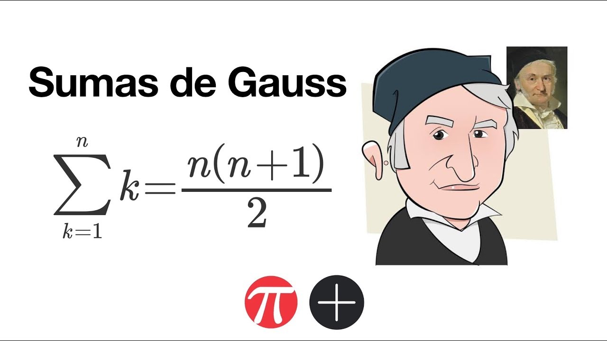

Johann Carl Friedrich Gauss nació el 30 de abril de 1777 en Brunswick (Braunschweig), Alemania. Fue hijo de Gebhard Dietrich Gauss, un trabajador humilde, y Dorothea Benze. Desde muy pequeño demostró un talento extraordinario para las matemáticas. Se cuenta que a los tres años ya corregía errores en las cuentas de su padre y que en la escuela sorprendió a su maestro al sumar rápidamente los números del 1 al 100 utilizando un método ingenioso.
Gracias a su talento, recibió apoyo económico del duque de Brunswick, lo que le permitió continuar sus estudios. Estudió en el Collegium Carolinum y posteriormente en la Universidad de Gotinga, donde profundizó en matemáticas y astronomía. Desde joven realizó descubrimientos importantes; a los 21 años demostró que era posible construir con regla y compás un polígono regular de 17 lados, un resultado que no se había logrado en más de dos mil años.
Gauss fue matemático, astrónomo y físico, y es considerado uno de los científicos más influyentes de la historia. Hizo aportaciones fundamentales en la teoría de números, el álgebra, la geometría, la estadística y el análisis matemático. Su obra Disquisitiones Arithmeticae sentó las bases modernas de la teoría de números. En estadística es conocido por la distribución normal, también llamada “campana de Gauss”. En astronomía desarrolló métodos para calcular órbitas de planetas y asteroides, y en física contribuyó al estudio del magnetismo.

Gauss trabajó gran parte de su vida en el Observatorio de Gotinga, donde combinó la investigación matemática con la observación astronómica. Fue reconocido en vida como el “Príncipe de los Matemáticos” por la profundidad y amplitud de sus descubrimientos.
Falleció el 23 de febrero de 1855 en Gotinga, Alemania. Hoy es recordado como una de las mentes más brillantes de todos los tiempos y una figura central en el desarrollo de las matemáticas modernas.